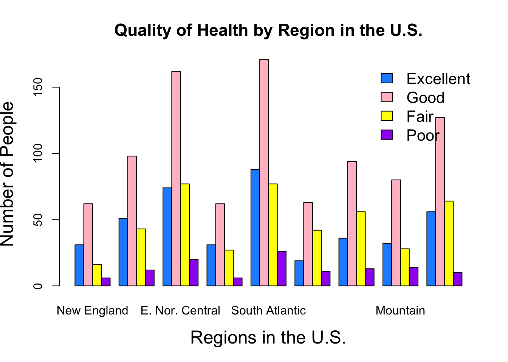

Project Code
######################################################################
#
# Final Project: Qaulity of Health by Regions of the Unites States
#
######################################################################
# We will first run a package to read data into R.
library(haven)
# there is also a package "foreign" that was showned in class, but "haven" works better.
# For this projedct, I will use GSS2016. GSS2016 was downloaded from this link:
# http://gss.norc.org/Documents/spss/2016_spss.zip
# The datafile was placed in work folder and loaded:
gss <- read_dta("GSS2016.DTA")
###################### 1. Working with data #################
# Find out the variable names using this command
gss_var <- colnames(gss)
#Refer to the GSS codebook for what's in each variable.
head(gss$health, 10) #displays the first 10 observation for the variable health## <Labelled double>
## [1] 2 NA(i) 2 2 1 NA(i) 4 2 2 2
##
## Labels:
## value label
## 1 excellent
## 2 good
## 3 fair
## 4 poor
## NA(n) NA
## NA(d) DK
## NA(i) IAPhead(gss$region, 10) #dipsplas the first 10 observation for the variable region.## <Labelled double>
## [1] 1 1 1 1 1 1 1 2 2 2
##
## Labels:
## value label
## NA(n) NOT ASSIGNED
## 1 new england
## 2 middle atlantic
## 3 e. nor. central
## 4 w. nor. central
## 5 south atlantic
## 6 e. sou. central
## 7 w. sou. central
## 8 mountain
## 9 pacific# Let's look at some descriptive statistics for our two variables. Given that both
# are categorical it doesn't make sense to look at mean, median or quantiles.
# We can plot some figures to visualize disbrution, however. For instant histograms.
health_reg1 <-(gss$health[gss$region == 1])
hist(health_reg1, breaks = 10, main = "Health Quality in the New England Region", col = "Wheat", ylab = "Frequency", xlab = "Quality of Health with 1 = Excellen and 4 = Poor") # distrtibution of health for people in region 1
whealth_reg2 <-(gss$health[gss$region == 2])
hist(health_reg2, 10, main = "Health Quality in the Middle Atlantic Region", col = "wheat", ylab = "Frequency", xlab = "Quality of Health with 1 = Excellen and 4 = Poor", cex.lab = 1,5, cex.main = 1.4) # distrtibution of health for people in region 2
health_reg3 <-(gss$health[gss$region == 3])
hist(health_reg3, 10, main = "Health Quality in East the North Central Region", col = "wheat", ylab = "Frequency", xlab = "Quality of Health with 1 = Excellen and 4 = Poor", cex.lab = 1,5, cex.main = 1.4) # distrtibution of health for people in region 3
health_reg4 <-(gss$health[gss$region == 4])
hist(health_reg4, 10, main = "Health Quality in the West North Central Region", col = "wheat", ylab = "Frequency", xlab = "Quality of Health with 1 = Excellen and 4 = Poor", cex.lab = 1,5, cex.main = 1.4) # distrtibution of health for people in region 4
health_reg5 <-(gss$health[gss$region == 5])
hist(health_reg5, 10, main = "Health Quality in the South Atlantic Region", col = "wheat", ylab = "Frequency", xlab = "Quality of Health with 1 = Excellen and 4 = Poor", cex.lab = 1,5, cex.main = 1.4) # distrtibution of health for people in region 5
health_reg6 <-(gss$health[gss$region == 6])
hist(health_reg6, 10, main = "Health Quality in the East South Central Region", col = "wheat", ylab = "Frequency", xlab = "Quality of Health with 1 = Excellen and 4 = Poor", cex.lab = 1,5, cex.main = 1.4) # distrtibution of health for people in region 6
health_reg7 <-(gss$health[gss$region == 7])
hist(health_reg7, 10, main = "Health Quality in the West South Central Region", col = "wheat", ylab = "Frequency", xlab = "Quality of Health with 1 = Excellen and 4 = Poor", cex.lab = 1,5, cex.main = 1.4) # distrtibution of health for people in region 7
health_reg8 <-(gss$health[gss$region == 8])
hist(health_reg8, 10, main = "Health Quality in the Mountain Region", col = "wheat", ylab = "Frequency", xlab = "Quality of Health with 1 = Excellen and 4 = Poor", cex.lab = 1,5, cex.main = 1.4) # distrtibution of health for people in region 8
health_reg9 <-(gss$health[gss$region == 9])
hist(health_reg9, 10, main = "Health Quality in the Pacific Region", col = "wheat", ylab = "Frequency", xlab = "Quality of Health with 1 = Excellen and 4 = Poor", cex.lab = 1,5, cex.main = 1.4) # distrtibution of health for people in region 9
#plots health status by region
health_status <-structure(list(NE=table(health_reg1), MA=table(health_reg2), EN=table(health_reg3), WN=table(health_reg4), SA=table(health_reg5), ES=table(health_reg6), WS=table(health_reg7), MO=table(health_reg8), PA=table(health_reg9)), .Names=c("New England", "Middle Atlantic", "E. Nor. Central", "W. Nor. Central", "South Atlantic", "E. Sou. Central", "W. Sou. Central", "Mountain", "Pacific"), class="data.frame", row.names=c("Excellent", "Good", "Fair", "Poor"))
barplot(as.matrix(health_status), main="Quality of Health by Region in the U.S.", ylab = "Number of People", xlab = "Regions in the U.S.", cex.lab = 1.5, cex.main = 1.4, beside=TRUE, col = c("dodgerblue", "pink", "yellow", "purple" ))
legend("topright", c("Excellent", "Good", "Fair", "Poor"), cex = 1.3, bty = "n", fill = c("dodgerblue", "pink", "yellow", "purple" ))
# To see if there is relationship between health and region I'll use regression.
lm(formula = health ~ factor(region), data = gss) # compares each region base on the health of the average person in the region##
## Call:
## lm(formula = health ~ factor(region), data = gss)
##
## Coefficients:
## (Intercept) factor(region)2 factor(region)3 factor(region)4
## 1.97391 0.10452 0.15522 0.08958
## factor(region)5 factor(region)6 factor(region)7 factor(region)8
## 0.13935 0.35942 0.25724 0.18193
## factor(region)9
## 0.13504summary(lm(formula = health ~ factor(region), data = gss)) # gives F and P statistics##
## Call:
## lm(formula = health ~ factor(region), data = gss)
##
## Residuals:
## <Labelled double>
## Min 1Q Median 3Q Max
## -1.33333 -0.33333 -0.11326 0.76884 2.02609
##
## Labels:
## value label
## 1 excellent
## 2 good
## 3 fair
## 4 poor
## NA(n) NA
## NA(d) DK
## NA(i) IAP
##
## Coefficients:
## Estimate Std. Error t value Pr(>|t|)
## (Intercept) 1.97391 0.07689 25.671 < 2e-16 ***
## factor(region)2 0.10452 0.09615 1.087 0.277175
## factor(region)3 0.15522 0.08919 1.740 0.081960 .
## factor(region)4 0.08958 0.10634 0.842 0.399690
## factor(region)5 0.13935 0.08826 1.579 0.114565
## factor(region)6 0.35942 0.10464 3.435 0.000606 ***
## factor(region)7 0.25724 0.09659 2.663 0.007804 **
## factor(region)8 0.18193 0.10162 1.790 0.073578 .
## factor(region)9 0.13504 0.09251 1.460 0.144539
## ---
## Signif. codes: 0 '***' 0.001 '**' 0.01 '*' 0.05 '.' 0.1 ' ' 1
##
## Residual standard error: 0.8246 on 1876 degrees of freedom
## (982 observations deleted due to missingness)
## Multiple R-squared: 0.009192, Adjusted R-squared: 0.004967
## F-statistic: 2.175 on 8 and 1876 DF, p-value: 0.02665lm(formula = health ~ factor(region) + educ +income, data = gss) # controls for other variables such as education and income.##
## Call:
## lm(formula = health ~ factor(region) + educ + income, data = gss)
##
## Coefficients:
## (Intercept) factor(region)2 factor(region)3 factor(region)4
## 3.30930 0.05280 0.09983 -0.03415
## factor(region)5 factor(region)6 factor(region)7 factor(region)8
## 0.09693 0.24171 0.11593 0.09458
## factor(region)9 educ income
## 0.06982 -0.06240 -0.03635summary(lm(formula = health ~ factor(region) + educ +income, data = gss)) #gives the F and P statistics##
## Call:
## lm(formula = health ~ factor(region) + educ + income, data = gss)
##
## Residuals:
## <Labelled double>
## Min 1Q Median 3Q Max
## -1.94579 -0.42816 -0.09407 0.54588 2.27507
##
## Labels:
## value label
## 1 excellent
## 2 good
## 3 fair
## 4 poor
## NA(n) NA
## NA(d) DK
## NA(i) IAP
##
## Coefficients:
## Estimate Std. Error t value Pr(>|t|)
## (Intercept) 3.309298 0.148681 22.258 < 2e-16 ***
## factor(region)2 0.052800 0.103000 0.513 0.6083
## factor(region)3 0.099826 0.095718 1.043 0.2971
## factor(region)4 -0.034146 0.112488 -0.304 0.7615
## factor(region)5 0.096931 0.095592 1.014 0.3107
## factor(region)6 0.241711 0.111135 2.175 0.0298 *
## factor(region)7 0.115929 0.102749 1.128 0.2594
## factor(region)8 0.094577 0.106777 0.886 0.3759
## factor(region)9 0.069819 0.100303 0.696 0.4865
## educ -0.062399 0.006821 -9.149 < 2e-16 ***
## income -0.036351 0.008618 -4.218 2.61e-05 ***
## ---
## Signif. codes: 0 '***' 0.001 '**' 0.01 '*' 0.05 '.' 0.1 ' ' 1
##
## Residual standard error: 0.795 on 1595 degrees of freedom
## (1261 observations deleted due to missingness)
## Multiple R-squared: 0.0806, Adjusted R-squared: 0.07484
## F-statistic: 13.98 on 10 and 1595 DF, p-value: < 2.2e-16Copyright © 2017 Menvekeh Daramay. All rights reserved.